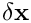
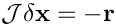
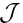
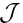

The purpose of this tutorial is to show how to specify different linear solvers for oomph-lib's Newton solver.
- Overview
- List of available linear solvers
- How to change the LinearSolver
- Problem-specific preconditioners
Overview
As discussed in the bottom-up discussion of oomph-lib's data structure, by default oomph-lib's Newton solver, Problem::newton_solve(...) solves the linear systems arising during the Newton iteration with its default linear solver, SuperLUSolver, a wrapper to Demmel, Eistenstat, Gilbert, Li & Liu's sparse direct solver SuperLU.
oomph-lib provides a large number of alternative linear solvers that may be used instead. All linear solvers within the library are derived from the base class LinearSolver which contains a single pure virtual function
whose task it is to compute the solution  (returned in the vector result) of the linear system

where  and  are the global Jacobian and the residual vector, computed by the
and  are the global Jacobian and the residual vector, computed by the Problem pointed to by problem_pt. The LinearSolver class also defines linear-algebra-type interfaces that allow the solution of linear systems with matrices other than the Problem's Jacobian matrix. However, these methods may not be implemented for all linear solvers.
List of available linear solvers
oomph-lib's linear solvers can be sub-divided into serial and parallel, and direct and iterative linear solvers. Here is a quick overview of the available linear solvers. If you are viewing this document online, the links take you directly to the solvers' class references which explain any solver-specific member functions.
- Serial solvers:
- Direct solvers:
SuperLUSolver:oomph-lib'sdefault linear solver, a wrapper to Demmel, Eistenstat, Gilbert, Li & Liu's sparse direct solver SuperLU.
HSL_MA42: A wrapper to the frontal solver MA42 from the HSL library. This solver is available free-of-charge for UK academics. The source code can be dropped into theoomph-libdistribution; see the instructions in the dummy code
external_src/oomph_hsl/dummy_frontal.f
DenseLU: A direct solver, based on the LU decomposition of the Jacobian matrix which is stored as a dense matrix. Given that the Jacobian matrices arising from most problems are sparse, this is likely to be a very inefficient solver. It is mainly used by the derived (and even more inefficient!) solverFD_LU.
FD_LU: Almost certainly the world's most inefficient solver. It computes the Jacobian matrix by finite differencing the global residual vector, without taking any sparsity into account. Mainly used by developers as a last-resort sanity check.
- Iterative solvers:
oomph-libprovides its own implementations of various standard iterative linear solvers. They are derived from the base classIterativeLinearSolverand are typically templated by the matrix type used store the Jacobian matrix. In most cases you will want to set the template argumentMATRIXtoCRDoubleMatrix:
GMRES: A Krylov subspace solver for symmetric and non-symmetric linear systems. The memory usage increases with each iteration but the iteration can be restarted.
BiCGStab: A Krylov subspace method for symmetric and non-symmetric linear systems. The memory requirement remains constant throughout the iteration.
CG: The classical conjugate gradient method for symmetric positive definite matrices. The memory requirement remains constant throughout the iteration.
GS: Gauss-Seidel – a stationary iterative solver.
oomph-libalso provides wrappers to third-party iterative linear solvers. These tend to provide their own implementations ofGMRES,BiCGStab,CG, etc. but are not necessarily derived fromoomph-lib'sownIterativeLinearSolverbase class.
HypreSolver: A wrapper to the high-performance linear solvers/preconditioners from the Scalable Linear Solvers Project.
TrilinosAztecOOSolver: A wrapper to the linear solvers from the Trilinos Project.
- Direct solvers:
- Parallel solvers:
- Direct solvers:
- When
oomph-libis compiled with MPI support, its default linear solverSuperLUSolverbecomes a wrapper to Demmel, Eistenstat, Gilbert, Li & Liu's parallel sparse direct solver SuperLU_DIST. This behaviour can be over-ruled with the member functionwhose argument must specify one of the three options listed in the enumerationSuperLUSolver::set_solver_type(...)SuperLUSolver::Type. This allows the serial solver SuperLU to be used even ifoomph-libis compiled with MPI support.
MumpsSolver: is a wrapper to the MUMPS multifrontal solver that is available whenoomph-libis compiled with MPI support and support for MUMPS.
- When
- Iterative solvers:
HypreSolver: A wrapper to the high-performance linear solvers/preconditioners from the Scalable Linear Solvers Project.
TrilinosAztecOOSolver: A wrapper to the linear solvers from the Trilinos Project.
- Direct solvers:
How to change the LinearSolver
Direct solvers
Changing oomph-lib's linear solver is straightforward. For instance, to change the linear solver to oomph-lib's DenseLU solver, simply create an instance of this solver and pass a pointer to it to the Problem. This most easily done in the Problem constructor:
In any subsequent calls to oomph-lib's Newton solver, DenseLU will now be used to solve the linear systems arising during the Newton iteration.
Iterative linear solvers and preconditioners
The specification of an iterative linear solver is just as easy: For instance, to specify oomph-lib's conjugate gradient solver CG (storing the Jacobian matrix in compressed row format) as the linear solver, add
to the problem constructor. We note that, by default, oomph-lib's IterativeLinearSolvers perform the preconditioning using the trivial "identity preconditioner". Most Krylov subspace solvers perform very poorly without some sort of preconditioning.
Specific preconditioners may be implemented by deriving from the Preconditioner base class, by implementing its two pure virtual functions
and
Note that, by default, oomph-lib's IterativeLinearSolvers employ left preconditioning.
oomph-lib provides fully-functional implementations of several general-purpose preconditioners. For instance, the zero-fill-in incomplete LU factorisation preconditioner ILU(0) may be employed by adding the lines
to the Problem constructor.
Of particular interest is the availability of an "exact preconditioner"
SuperLUPreconditioner whose use guarantees the convergence of any iterative solver within a single iteration – useful for code development.
Third-party iterative linear solvers and preconditioners
oomph-lib provides wrappers to various third-party iterative linear solvers and preconditioners. We stress that these solvers are not necessarily implemented as oomph-lib IterativeLinearSolvers since their interfaces for the specification of preconditioners, etc may differ from those employed by oomph-lib.
Trilinos
oomph-lib provides wrappers to the iterative linear solvers/preconditioners from the Trilinos Project. The demo code TrilinosSolver_test.cc demonstrates how use various combinations of solvers/preconditioners. Here is a brief overview:
Trilinos solvers
The wrappers to Trilinos' Krylov subspace solvers are implemented as oomph-lib IterativeLinearSolvers, allowing them to be used via the standard interfaces described above. For instance, to use oomph-lib's wrapper to Trilinos' Aztec solver, using Trilinos' ML multilevel preconditioner, set the solvers and preconditioners as usual:
The actual Krylov subspace solver used by the Trilinos solver is specified by passing an enumerated flag (defined as static member data in the TrilinosAztecOOSolver class) to the solver. For instance, Trilinos' CG, GMRES and BiCGStab solvers are selected with
or
or
respectively.
Trilinos preconditioners
oomph-lib provides wrappers to Trilinos' ML and IFPACK preconditioners that allows them to be used as oomph-lib Preconditioners that may be used with oomph-lib's own IterativeLinearSolvers. Here is an example that shows how to build an instance of oomph-lib's GMRES, preconditioned with its wrapper to Trilinos' IFPACK preconditioner:
Hypre
oomph-lib provides wrappers to the high-performance linear solvers/preconditioners from the Scalable Linear Solvers Project. The demo code HypreSolver_test.cc demonstrates how use various combinations of solvers/preconditioners. Here is a brief overview:
Hypre solvers
The wrappers to Hypre's Krylov subspace and AMG solvers are implemented as oomph-lib LinearSolvers (not IterativeLinearSolvers!)
so the interfaces for the specification of preconditioners etc. differ from those for oomph-lib's own IterativeLinearSolvers.
The HypreSolver is set like any other LinearSolver:
The actual solver used by the HypreSolver is specified by passing an enumerated flag (defined as static member data in the HypreSolver class) to the solver. For instance, Hypre's AMG, CG, GMRES and BiCGStab solvers are selected with
or
or
or
respectively.
These Krylov subspace methods may then be preconditioned by Hypre's own (internal) preconditioners, again by specifying the method via an enumerated flag. So, to use no preconditioning, or to precondition with BoomerAMG (and AMG-based preconditioner), Euclid (an ILU preconditioner) or ParaSails (a sparse approximate inverse preconditioner), set:
or
or
or
respectively.
Hypre preconditioners
oomph-lib provides wrappers to Hypre's preconditioners that allows them to be used as oomph-lib Preconditioners that may be used with oomph-lib's own IterativeLinearSolvers. Here is an example that shows how to build an instance of oomph-lib's BiCGStab and to use the HyprePreconditioner as the preconditioner:
Now we build an instance of a HyprePreconditioner
and set it as the Preconditioner for oomph-lib's BiCGStab solver:
The actual preconditioning methodology to be used by the HyprePreconditioner is again selected via enumerated flags, i.e.
or
or
Problem-specific preconditioners
In addition to "general-purpose" preconditioners like ILU, oomph-lib provides a number of problem-specific preconditioners which are typically based on the library's block preconditioning framework. Separate documentation is available for these:
- We provide a (very!) detailed discussion of
oomph-lib'sblock preconditioning framework.
- Another tutorial discusses
oomph-lib's"general purpose" block preconditioners.
- The NavierStokesSchurComplementPreconditioner for Navier-Stokes problems is described in its own tutorial.
- The FSIPreconditioner for monolithically-discretised fluid-structure interaction problems is described in its own tutorial
- We provide a preconditioner for large-displacement solid mechanics problems in which boundary displacements are prescribed.
- The previous preconditioner is mainly used as a subsidiary block preconditioner for the solution of fluid-structure interaction problems with (pseudo-)solid fluid mesh updates.
PDF file
A pdf version of this document is available. \